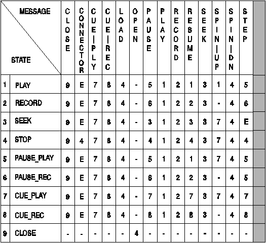

Media devices that transport data are considered to be in one of the following nine states at any given time:
When a device is opened, the device context is assumed to be in the stopped state. The closed state can be viewed as both the initial state and the termination state. Or this state can be thought of as not a state at all, because a device context does not exist before it is opened, and ceases to exist when it is closed.
The following figure lists the allowable device states in the first column of the table and indicates the changes in state that occur when the command messages shown at the top of the table are issued. This table assumes all error conditions keep the device in its current state. For example, a waveform player that is opened without an element remains in the stopped state when a play is issued, and the MCD receives an error code.
Note that a device is in the seek state only during the SEEK operation. Upon completion of the seek, the device enters the stop state. The following figure is provided as a guide to application developers and MCD writers. There can be no guarantee that every media device will conform to this table, but every effort should be made to hide the complexity of the device from the application.

Legend
E